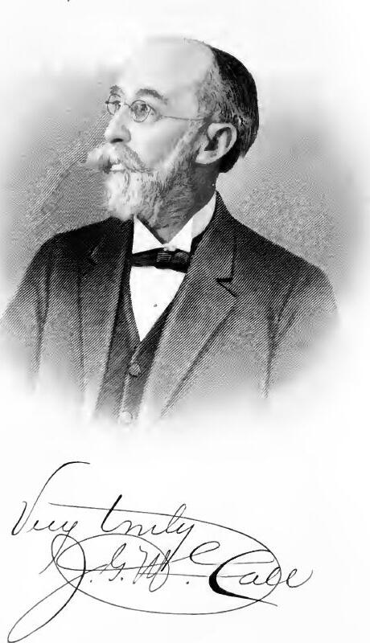

John Goldwire McCall
Back to the Railroad Organizers index
John Goldwire McCall (January 18, 1836-December 3, 1921) was a lawyer, judge, farmer, public official, educator, Baptist lay leader, businessman, and railroad promoter in Quitman, Georgia. He served as Brooks County ordinary, mayor of Quitman, judge of the City Court of Quitman, and a Brooks County member of the Georgia House. He was also a founding director of the South Georgia Railroad and remained on its board after the road opened.[1-8]

John Goldwire McCall. Portrait and signature from Men of Mark in Georgia, volume 5, published in 1908.
Name and identity
The full name is secure. Contemporary biographies, his death notice, and his marker identify him as John Goldwire McCall or John G. McCall. The titles Captain, Judge, and Doctor all appear in the record. Captain referred to his Confederate rank, Judge to his civil offices, and Doctor to Mercer's honorary LL.D. He was not a physician.[1-5]
He must be kept separate from two close relatives:
- Dr. James H. McCall, his brother, was a physician, druggist, banker, and South Georgia Railroad charter petitioner.
- John Francis McCall, his son, was also a lawyer and appears in later Quitman records as John F. McCall.[1][3][6]
This distinction matters most in the railroad record. Contemporary reports elected J. G. McCall to the first board, while Huxford's charter-petitioner list names James H. McCall. The brothers did not hold the same founding role.[6-8]
Family and early years
McCall was born in Screven County on January 18, 1836, the oldest child of Francis Stephen McCall and Ann Dopson McCall. The family moved through Telfair County before settling in 1845 about eight miles south of the future Quitman. The area was then part of Lowndes County; Brooks County was created in 1858.[1][3][4]
Francis McCall was a planter who also operated a grist mill and blacksmith shop. Huxford says the household belonged to Concord Baptist Church and names thirteen children. Those details describe the parental farm. No slave schedule, deed, or probate record inspected for this dossier establishes whether John personally enslaved anyone in his own right.[3]
John married Rosa Elizabeth Bobo of Glenville, Alabama, in January 1867. Two lifetime biographies disagree by one day: one gives January 30 and the other January 31. Later family history calls her Rosella Elizabeth. She was a daughter of Dr. Virgil Bobo and Sarah Hanson Black Bobo.[1][2][3]
The family record and the 1921 death report identify five surviving children:
- Rosa Lena, also printed Rosa Lee or Rosalena, who married John O. Lewis;
- Rachel Black, who married Charles F. Cater;
- Nonnie Bobo McCall, who did not marry;
- John Francis McCall, whose later marriages are recorded in the family history; and
- Edna Floride McCall, who married Albert L. Tidwell.[1-4]
One 1908 biography says six children had been born and five were living. No inspected source names the child who died, so the complete six-child birth list remains unresolved.[2]
Union University and the Mercer degree
McCall studied at Union University in Murfreesboro, Tennessee. University catalogues list J. G. McCall, A.M., first as an adjunct professor of languages and mathematics and then as professor of Greek and Hebrew. A lifetime biography says he graduated in 1858, pursued additional work in French, German, and Syriac, and received the A.M. degree. These records establish his education and faculty work before the Civil War.[1][9-11]
Huxford says he graduated with highest honors and mastered seven languages. A separate 1908 biography says he graduated with second honor. The catalogues do not settle the class rank, so neither claim should be preferred as fact. The sources do agree that he received advanced classical and language training and taught at Union before leaving for military service.[2][3][9-11]
Mercer University conferred an honorary LL.D. on McCall. An 1895 biography dates the degree to 1894, and an 1899 Baptist Convention roster already printed his name with the degree. The honorific Doctor in later sources refers to this degree.[1][12]
Confederate service
McCall joined Company K, 50th Georgia Infantry, as first lieutenant on March 4, 1862. Huxford's roster records a severe facial wound at Funkstown, Maryland, on July 10, 1863, his election as captain on July 31, and transfer to the Invalid Corps on December 2, 1864.[3]
The lifetime accounts say he fought in the Virginia and Maryland campaigns, including Second Manassas, Fredericksburg, Antietam or Sharpsburg, and Gettysburg. During the retreat after Gettysburg he commanded infantry and artillery guarding a bridge over Antietam Creek. A bullet shattered his lower jaw. He survived but lost part of the bone and later wore a metal plate.[1-3]
Huxford adds that Dr. George Todd, Mary Todd Lincoln's brother, operated on him. That detail was not confirmed in a wartime medical record. The company, ranks, dates, wound, and later disability are well supported; the surgeon's identity remains a family-history claim.[3]
Law and the courts
After returning home disabled, McCall became Brooks County ordinary. The county roster dates his commission to February 16, 1864, and his service through 1868. He studied law during that term. A May 1867 report concerning a professional visit to Berrien County proves that he was practicing by then.[3][13]
He remained at the Quitman bar for the rest of his working life. A June 1866 memorial for four Brooks County lawyers killed in the war bears his name with Henry G. Turner, William A. Lane, William B. Bennet, James H. Hunter, and Carey W. Styles. Much later, William H. Long worked in his office before joining S. S. Bennet.[3]
Governor Hoke Smith appointed McCall judge of the City Court of Quitman in January 1908 after William B. Bennet resigned. He received a full four-year appointment that July and served through 1912. A 1911 report shows him sitting by designation in Douglas when the local judge was disqualified.[14-16]
Huxford's family sketch also calls him a County Court judge, but its office roster lists William B. Bennet as County Court judge throughout the relevant period and lists McCall only for the City Court. No primary record found for this dossier supports a County Court term. That part of the family sketch is contradicted.[3]
Elections and public office
McCall's first countywide office began during the war. After four years as ordinary, he lost the April 1868 Reconstruction election to James L. Beaty, 667 to 366. The result ended his term but not his public life.[3]
He was mayor of Quitman in 1889, 1890, and 1891. A January 1890 report says he was elected without opposition while voters approved the new graded-school system. He also ran for the state Senate in 1886 but Brooks County chose Thomas Livingston.[3][17-18]
McCall represented Brooks County in the Georgia House during the 1919-20 term. He resigned in April 1920 because of age and poor health, and Burton L. Weston succeeded him. This was House service, not a state Senate term.[19-22]
McCall was active in Democratic politics and temperance work. Huxford says he drafted an unsuccessful local dispensary bill after Brooks County supported the 1896 Bush temperance proposal. The bill did not become law.[3]
Schools and educational government
McCall's work in public education began long before the graded-school campaign. He served as a Quitman Academy trustee in the 1870s. When Brooks County organized its Board of Education in 1872, the board elected him president. Huxford's roster dates that presidency from 1872 through 1880.[3]
In January 1890 he won the mayoralty on the same ballot that approved Quitman's public graded-school system. Voters then elected him to the first city Board of Education, and the board chose him as president. He was reelected in 1892 and 1894. These records show that he helped move Quitman from a mix of academy and private-school arrangements into a municipal system.[3][17][23]
Huxford also calls him a co-founder and trustee of Norman Junior College. That role is plausible and fits his wider educational work, but no dated founding record inspected here establishes his exact part.[3]
Baptist and Mercer work
McCall and his wife belonged to Quitman Baptist Church. He served as church clerk and Sunday school superintendent and taught a Bible class for at least fifty years. A 1914 article reported a church observance of his fiftieth year as a teacher. Huxford later gave the tenure as more than sixty years, but the 1921 obituary again said fifty. The safe conclusion is that the teaching began during or soon after the Civil War and continued for at least half a century.[3][24-25]
He served as moderator of the Mercer Baptist Association and as a vice president of the Georgia Baptist Convention. The convention elected him to the latter office in 1899 and also placed him on a committee dealing with mob violence and criminal-law reform.[3][12][26]
His longest institutional connection was with Mercer University. Contemporary reporting identifies him as a trustee by the 1890s and as president of the board during the first decade of the twentieth century. He took part in presidential searches and board reorganization, resigned after thirty-four years of service in 1915, and later returned to the board. At his death, Mercer reported that he had served ten years as board president. The university also held a $1,000 John G. McCall scholarship for students.[25][27-30]
Agriculture, business, and community projects
McCall practiced law but also farmed and remained active in agricultural organizations. He signed the March 1869 call to organize the Brooks County Agricultural Society and served as secretary pro tem at its second meeting. Later reports place him in state agricultural meetings, and Huxford calls him a vice president of the State Agricultural Society.[3][31]
The Quitman Hotel Company elected him its first president in 1889. The company built the Hotel Marie at Screven and Washington streets. He also joined the first board of Merchants & Farmers Bank in 1891, became vice president in 1893, and was president in 1895. His brother Dr. James H. McCall, not John, was the bank's first president.[3][32-33]
In 1899 McCall chaired the campaign to reopen and enlarge Quitman's cotton mill. Huxford records his initial $1,000 subscription and says the listed subscriptions were later raised by 25 percent. The family sketch calls him a mill director, though no corporate minute book was found to fix his term.[3]
His public record included views that should not be softened by later praise. A 1908 biography quoted him advocating race legislation that recognized what he called Anglo-Saxon superiority. That was an explicit white-supremacist position. The same sketch presented him as a firm supporter of religious education and constitutional government. Both positions belong to the record.[2]
Railroad promotion
McCall promoted rail connections well before the South Georgia Railroad was organized. In February 1885 he helped lead a Brooks County convention seeking a branch from Quitman to Monticello, Florida. In January 1886 he chaired the Quitman delegation that met Savannah, Florida and Western Railway officials about the proposal. The reports document negotiation and advocacy, not construction of the line.[34-36]
South Georgia Railroad stockholders met on March 23, 1896, accepted the charter, adopted bylaws, and elected J. G. McCall to the first nine-member board. He was a director, not one of the first executive officers. The old board, including McCall, was reelected in 1899. A 1911 annual-meeting report probably records another reelection, though the printed initials are shortened.[6-8][37-38]
John was not the documented charter petitioner. Huxford's petitioner list names his brother James H. McCall, then separately names John on the first board. Without the missing original petition, the two roles should not be exchanged.[3][6-8]
In February 1899 McCall joined Frank J. Spain and Joseph Mabbett on a committee investigating a possible railroad southward from Quitman. In 1907 he also joined the petition for the proposed Quitman, Valdosta and Thomasville Electric Railway and Power Company. Neither record proves that the proposed extension or electric line was built.[39-43]
No stock ledger, share certificate, subscription amount, resignation, or complete board minute book was found for his South Georgia Railway service. The supported chronology is founding director in 1896, verified director again in 1899, and strong probable board service in 1911.[6-8][37-38]
Death and burial
McCall attended church on Friday, December 2, 1921, and appeared to be in his usual health. He was found dead in bed the next morning when he did not answer for breakfast. The local dispatch and his marker establish December 3 as the date of death. He was eighty-five.[4-5][25]
The funeral took place at Quitman Baptist Church on December 4. The surviving children named in the death report match the family history. His marker in West End Cemetery reads "Capt. John G. McCall LL.D. / Jan. 18, 1836 - Dec. 3, 1921".[3-5]
The Macon Telegraph said he died late Friday night, which points to December 2, while the local dispatch says he was found dead on the morning of December 3 and his marker uses December 3. The local report and marker control. One line in the Macon notice also printed John J. McCall, but the Quitman setting, Mercer service, degree, Bible class, son, and scholarship make clear that it concerned John G. McCall.[4-5][25]
Record conflicts and limits
- Marriage date: January 30 or January 31, 1867. The two lifetime biographies differ by one day.
- Wife's name: contemporary accounts favor Rosa Elizabeth; Huxford uses Rosella Elizabeth.
- Children: five surviving children are verified; a 1908 biography says six were born, but the deceased child is unnamed.
- Union class standing: one source says highest honors, another second honor. The catalogues do not settle the point.
- Military surgery: the service and wound are secure; Dr. George Todd's role remains a later family-history claim.
- Court service: City Court judge is verified. The County Court claim is contradicted by Huxford's own roster.
- Mercer chronology: long trusteeship and ten years as board president are secure, but the exact dates of every board term remain incomplete.
- Railroad: founding and later board service are documented; stock ownership, subscription amount, final term, and an executive office are not.
- Property: the evidence shows farming and a 240-acre tract sold near Quitman, but no complete deed or probate chain was assembled.
Confidence summary
| Question | Finding | Confidence |
|---|---|---|
| Identity | John Goldwire McCall of Quitman | Verified |
| Birth and death | January 18, 1836-December 3, 1921 | Verified |
| Parents | Francis Stephen McCall and Ann Dopson | Verified from two lifetime or family accounts |
| Marriage | Rosa Elizabeth Bobo, January 1867 | Verified broadly; exact day disputed |
| Children | Five named surviving children; one additional deceased child reported | Survivors verified; complete birth list unresolved |
| Education | Union A.M. and prewar faculty service | Verified; class rank disputed |
| Military service | Company K, 50th Georgia; first lieutenant, captain, facial wound, Invalid Corps | Verified |
| Legal career | Quitman lawyer by 1867; City Court judge, 1908-1912 | Verified |
| County Court judgeship | Later family-sketch claim | Contradicted by the office roster |
| Public office | Ordinary, mayor, and Georgia House member | Verified |
| School work | County and city education-board president | Verified |
| Baptist and Mercer work | Bible teacher, denominational officer, Mercer trustee and board president | Verified broadly |
| Business | Hotel Company president, bank director and officer, cotton-mill promoter | Strong probable to verified by dated local records |
| Railroad | Founding director in 1896 and director in 1899 | Verified; 1911 reelection strong probable |
| Burial | West End Cemetery, Quitman | Verified by photographed marker and county history |
Sources
- Memoirs of Georgia, vol. 1 (Atlanta: Southern Historical Association, 1895), 383-385, Internet Archive.
- William J. Northen, ed., Men of Mark in Georgia, vol. 5 (Atlanta, 1908), 116-119, Internet Archive.
- Folks Huxford, The History of Brooks County, Georgia, 1858-1948 (1948), especially pp. 119, 150, 193-198, 202, 207-213, 229-231, 271-272, 293-301, 332-354, 366-371, 407, 498, and 510-514, Internet Archive.
- Atlanta Journal, December 4, 1921, death report, Newspapers.com image 970896653.
- Find a Grave memorial 30170823, West End Cemetery, including photographed marker, memorial.
- Savannah Morning News, March 24, 1896, South Georgia Railroad organization, Newspapers.com image 852573116, also Georgia Historic Newspapers.
- Atlanta Constitution, March 25, 1896, parallel organization report, Newspapers.com image 26796218.
- South Georgia Railroad founding evidence and participant roster.
- Union University, Tenth Annual Catalogue, 1858-59, Internet Archive.
- Union University, Eleventh Annual Catalogue, 1859-60, Internet Archive.
- Union University, Seventh Annual Catalogue, 1855-56, Internet Archive.
- Savannah Morning News, April 2 and April 4, 1899, Georgia Baptist Convention reports, April 2 page and April 4 page.
- Weekly Georgia Telegraph, May 17, 1867, professional visit, Georgia Historic Newspapers.
- Valdosta Daily Times, January 18, 1908, first City Court appointment, Newspapers.com image 889727146.
- Valdosta Times, July 21, 1908, full-term appointment, Georgia Historic Newspapers.
- Douglas Enterprise, August 19, 1911, McCall sitting by designation, Georgia Historic Newspapers.
- Morning News, January 16, 1890, mayoral and graded-school election, Georgia Historic Newspapers.
- Valdosta Times, August 14, 1886, Brooks County state Senate preference, Newspapers.com image 889719016, also Georgia Historic Newspapers.
- Georgia Department of Archives and History, Georgia's Official Register, 1925, historical House roster, Internet Archive.
- Pearson Tribune, April 16, 1920, McCall's House resignation, Georgia Historic Newspapers.
- Pearson Tribune, June 25, 1920, Burton L. Weston sworn as successor, Georgia Historic Newspapers.
- Atlanta Tri-Weekly Journal, August 28, 1920, former Brooks representative, Georgia Historic Newspapers.
- Savannah Morning News, March 29, 1894, city education-board election, Newspapers.com image 852572845.
- The Golden Age, February 5, 1914, fiftieth year of Sunday school teaching, Georgia Historic Newspapers.
- Macon Telegraph, December 4, 1921, Mercer trustee death notice, Newspapers.com image 825949701.
- Walker County Messenger, April 6, 1899, Georgia Baptist Convention officers, Georgia Historic Newspapers.
- Vienna News, June 16, 1905, Mercer board presidency, Georgia Historic Newspapers.
- Macon Telegraph, June 6, 1913, Mercer service and board reorganization, Newspapers.com image 825457630.
- Atlanta Journal, June 19, 1915, resignation after thirty-four years on Mercer's board, Newspapers.com image 969967303.
- Post-Search Light, December 8, 1921, Mercer, legislative, degree, scholarship, and Bible-class summary, Georgia Historic Newspapers.
- Morning News, August 14, 1896, State Agricultural Society address, Georgia Historic Newspapers.
- Atlanta Constitution, February 26, 1891, Merchants & Farmers Bank organization, Newspapers.com image 26832359.
- Savannah Morning News, February 26, 1891, parallel bank report, Newspapers.com image 852544716.
- Macon Telegraph, February 27, 1885, Quitman-Monticello convention, Newspapers.com image 823554803.
- Atlanta Constitution, January 21, 1886, Quitman delegation, Newspapers.com image 34209019.
- Savannah Morning News, January 21, 1886, parallel delegation report, Newspapers.com image 830472693.
- Atlanta Constitution, March 30, 1899, South Georgia Railway board reelection, Newspapers.com image 26826945.
- Atlanta Constitution, December 23, 1911, annual meeting and board reelection, Newspapers.com image 26837686.
- Atlanta Constitution, February 24, 1899, southward-extension committee, Newspapers.com image 34116381.
- Valdosta Daily Times, May 31, 1907, electric-railway petition, Newspapers.com image 889830288.
- Valdosta Daily Times, June 6, 1907, continued petition, Newspapers.com image 889830441.
- Valdosta Daily Times, June 14, 1907, continued petition, Newspapers.com image 889830630.
- Valdosta Times, June 1, 1907, parallel petition publication, Newspapers.com image 890232214.
Research note
This dossier was completed August 21, 2026. Research covered the existing South Georgia Railroad collection, Huxford's county history and office rosters, Union University catalogues, two lifetime biographies, Georgia's official legislative register, Georgia Historic Newspapers, Newspapers.com, Find a Grave and the photographed marker, Mercer and Baptist reporting, and prior McCall family research. The source review covered 1855 through 1921 and kept the lawyer and railroad director separate from his physician brother and lawyer son. Conflicts that change a historical claim are stated above rather than silently resolved.